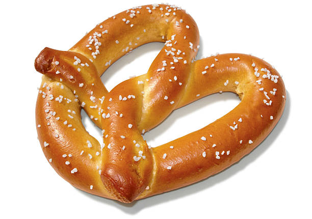

Soft Doughy Pretzels Recipe

Recipe Description
These pretzels are so delicious they will make you wanna jump up and slap yo mama.
Speaking of moms, I learned this recipe from my great-great-great-great-great
grandmother. She had an affair with Napoleon Bonapart before he became emperor.
It has subsequently been passed down through our family from generation to generation.
Add cinnamon sugar or parmesan cheese for a little extra treat!
Ingredients List
General
- 2 tablespoons baking soda
Dough
- 1 cup self-rising flour, plus more for kneading
- 1 cup plain Greek yogurt
Topping
- 3 tablespoons butter, melted
- 1 teaspoon coarse salt, or as needed
Steps
- Bring 6 cups of water to a boil in a large pot. Add baking soda
- Preheat oven to 350 degrees F (175 degrees C). Grease a baking sheet
- Mix 1 cup flour and Greek yogut together in a medium bowl until a shaggy doughy
forms. Transfer to a surface dusted with more self-rising flour, and knead
for 8 to 10 minutes. Continue adding flour as need if the dough is too sticky.
- Cut the dough into 4 equal pieces. Roll each segment into a long, thin rope,
22 to 24 inches in length. Twist the rope into a pretzel shape by taking the
two ends, twisting them around each other, then securing both ends side by side onto
the center portion of the rope.
- One by one, carefully drop each pretzel into the water and boil until the pretzel
floats to the top, 2 to 3 minutes. Drain on paper towerls or a cooling rack.
- Transfer to the prepared baking sheet.
- Bake in the preheated over for 20 minutes. Remove from the oven and increase the
oven's temperature to 425 degrees F (220 degrees C). Brush the pretzels with some of
the melter beuuter; continue to bake until golden brown, 4 to 5 minutes more.
Brush with remaining butter and top with coarse salt.